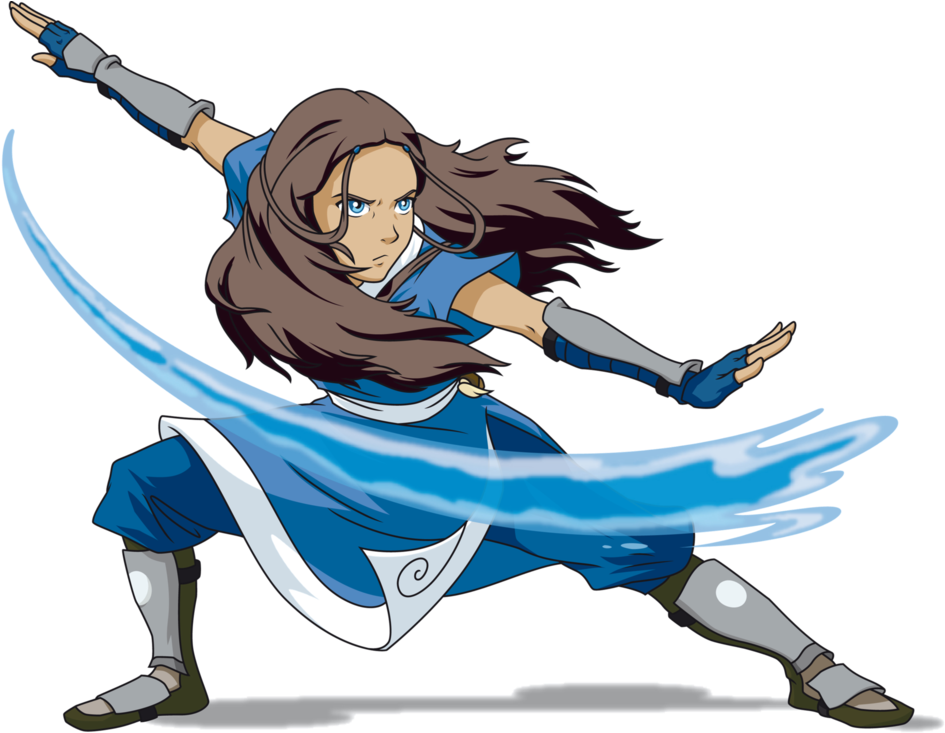

Katara
Katara foi a última dominadora de água em sua tribo e levou uma vida normal adolescente até que ela e seu irmão encontraram um menino chamado Aang. Quando ela descobre que ele é o Avatar, perdido por cem anos, ela tem a esperança de que ele é quem vai salvar o mundo devastado pela guerra.
Pergaminho

Dominação
Katara aprendeu técnicas básicas de dobra de água e conseguiu dominar algumas formas simples de dobras de água. Ela foi capaz de condensar a umidade do ar para criar sua própria fonte de água para a sua Dobra
Habilidade Especial
Katara tornar-se consciente de que poderia remover a água da vida vegetal e aprendeu a usar a Dobrade Sangue com facilidade.